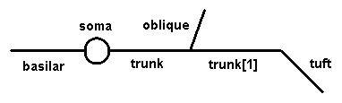

To see how this works, try the following.
1. Start NEURON with its standard GUI in the /course/ballstk directory ( remember how? ).
2. Bring up the CellBuilder and construct a cell that looks like this:

Use any anatomical and biophysical properties you like; these might be interesting to start with:
| Section | L (um) | diam (um) |
| soma | 30 | 30 |
| trunk | 400 | 3 |
| trunk[1] | 400 | 2 |
| oblique | 300 | 1.5 |
| tuft | 300 | 1 |
| basilar | 300 | 3 |
4. In the interpreter verify the structure and parameters of your model with
topology() and forall psection()
5. At the proximal end of tuft, place an alpha function synapse that has onset = 0 ms, tau = 1 ms, gmax = 0.01 umho, and e = 0 mV (hint: NEURON Main Menu / Tools / Point Processes / Managers / Point Manager).
6. Open a graph window to plot soma Vm vs. time. Also set up a space plot that shows Vm along the length of the cell from the distal end of the basilar to the distal end of the tuft.
7. Run a simulation. If necessary, increase Tstop until you can see the full time course of the cell's response to synaptic input.
8. Increase nseg until the spatial profile of Vm is smooth enough
(a couple of applications of
forall nseg *= 3
in the interpreter window should do the trick).
You may need to adjust the peak synaptic conductance in order
to trigger a spike.
Then use the command
forall print secname(), " ", nseg
to see how many segments are in each section.
9. You can also set nseg for any or all sections using the CellBuilder according to options that you select by Geometry/Specify Strategy. You can set the number of segments manually, or let the CellBuilder adjust them automatically according to one of these criteria:
10. What happens if the sodium channels are blocked throughout the apical dendrites? Use the CellBuilder to reduce apical gnabar to 0 and then run a simulation.